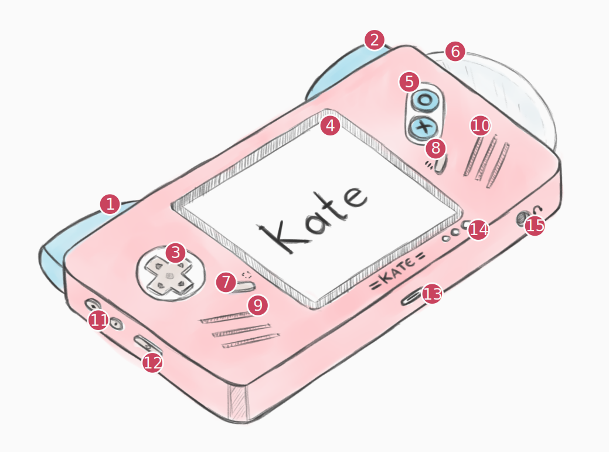

Tech specs#
The console#
Kate is a handheld console that uses 2020s technology to recreate some of the feelings of early 2000s and 2010s technology. It sports a cat-themed case, specific security feedback channels, and a slot-loading mini-disc drive!
Item |
Description |
|---|---|
(1) |
Left shoulder trigger ( |
(2) |
Right shoulder trigger ( |
(3) |
D-Pad ( |
(4) |
4” capacitive touch screen (800x480, 5:3) |
(5) |
Face buttons: |
(6) |
Slot-loading mini CD/DVD drive (or SD card slot) |
(7) |
|
(8) |
|
(9) |
Left speakers |
(10) |
Right speakers |
(11) |
Volume buttons (+, -) |
(12) |
Power/Sleep button |
(13) |
USB Type-C port |
(14) |
Device status, Trust indicator, and Resource indicator leds |
(15) |
Headphone jack |
Computing power#
Kate is available in different versions, with increasing cost and computing power capabilities. For requirements, games will include the lowest version needed to play the game, as well as the recommended version.
Crystal (Casual) |
Paper Lantern (Regular) |
Phantom (Powerful) |
|
|---|---|---|---|
CPU |
1.4GHz (4 cores) |
1.8GHz (4 cores) |
2.4GHz (4 cores) |
RAM |
1 GB |
2 GB |
4 GB |
Storage |
32 GB |
64 GB |
128 GB |
Graphics#
Kate uses 4” capacitive multi-touch (10 points) display with a resolution of 800x480. When connecting to an external display, it can reach the maximum resolution of 1280x720. The screen aspect ratio is 5:3.
The GPU supports OpenGL ES 3.1.
Note
When running the emulator, this means that your GPU card should have at least been released after 2012, and have updated drivers that provide the needed functionality.
Input#
Kate has a total of 8 digital input buttons and 2 analog buttons used for controlling games:
 (Ok) and
(Ok) and  (Cancel) face buttons;
(Cancel) face buttons; (D-Pad);
(D-Pad); (Capture button) and
(Capture button) and  (Menu button);
(Menu button); and
and  analog triggers;
analog triggers;
It also has a capacitive touch screen with support to 10 touch points, a haptics module for vibration, a 3-axis gyroscope sensor, and a 3-axis accelerometer sensor.
Up to 4 gamepads can be connected to the console at a time, either through bluetooth or directly through USB.
Cartridges#
Games for Kate can be made with many different technologies, and are shared as ROM files, which Kate calls a “cartridge”. These cartridges can contain up to 512 MB of data [1]. Because Kate includes a mini CD/DVD drive, one inexpensive form of sharing and archiving these games offline is to burn them to a mini CD/DVD.
Kate never runs the ROM files directly; rather they’re copied into the console in a more efficient format upon installation. From that point on, as long as you don’t archive the game in Kate, it can be played without needing to keep the file around or insert the disc [2].